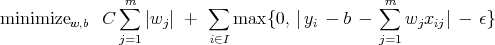
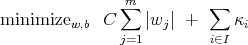
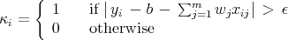
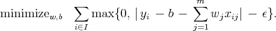
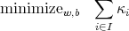

Case Study:
Drug Design and Development Inc
Integer Programming Formulations
Students may work in groups of up to three people. You may consult only your textbooks, your notes, online information about AMPL, and me.
Due: Friday, December 10. (20 points)
In DDD’s original model, they chose b and w to
|  | (1) |
for the m = 5 factors and the set of I = {1,…, 40} compounds. In this part of the project, we look at alternative objectives.
If you prefer to use them, my model and run file are available on the course website. For each question in this part of the project, take C = 1, ϵ = 0.05, and use all 40 samples to find w and b.
Along with the solutions to the questions, hand in your new model files, highlighting the changes you made.
|  | (2) |
where
|  | (3) |
for each i I. Model this problem as an integer program and solve it. (You can assume |yi - b - ∑ j=1mw jxij| ≤ 1 for each i I.)
|  | (4) |
Model this problem as an integer program and solve it. (You can assume |wj| ≤ 5 for j = 1,…, 5.)
|  | (5) |
with κ defined in (3), and they want to impose the constraint that no more than 3 components of w be nonzero. Model this problem as an integer program and solve it. (You can assume |yi - b - ∑ j=1mw jxij| ≤ 1 for each i I and |wj| ≤ 5 for j = 1,…, 5.)
AMPL hints:
It is also available on RCS. Instructions for using it on RCS are available from
From a unix machine, use ssh rcs-sun.rpi.edu or ssh rcs-ibm.rpi.edu to access RCS. From a Windows machine, you can use SecureCRT; you need to connect to rcs-sun or rcs-ibm to ensure that cplex and ampl are available.
Alternatively, if you don't have cplex running, you can submit your model to the NEOS server at
I would suggest using either the solver cbc or the solver MINTO. Note that you will need to use a run file if you want to get output that is nicely formatted and easy to interpret.